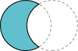
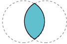
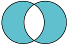

La geometría de área constructiva (CAG) es el proceso de creación de nuevas formas geométricas mediante la
realización de operaciones booleanas en las existentes. En la API de Java 2D, la clase
Area implementa la
interfaz
Shape y admite las siguientes operaciones booleanas.
| Union |  | Sustracción | |
|  | Intersección |  | O exclusivo (XOR) |
En este ejemplo los objetos Area construyen
In this example Area objects construct una forma de pera de varias elipses.
Pear.java contiene el código completo para este applet.
Cada una de las hojas se crea realizando una intersección en dos círculos superpuestos.
leaf = new Ellipse2D.Double();
...
leaf1 = new Area(leaf);
leaf2 = new Area(leaf);
...
leaf.setFrame(ew-16, eh-29, 15.0, 15.0);
leaf1 = new Area(leaf);
leaf.setFrame(ew-14, eh-47, 30.0, 30.0);
leaf2 = new Area(leaf);
leaf1.intersect(leaf2);
g2.fill(leaf1);
...
leaf.setFrame(ew+1, eh-29, 15.0, 15.0);
leaf1 = new Area(leaf);
leaf2.intersect(leaf1);
g2.fill(leaf2);
Los círculos superpuestos también se utilizan para construir el vástago mediante una operación de resta.
stem = new Ellipse2D.Double();
...
stem.setFrame(ew, eh-42, 40.0, 40.0);
st1 = new Area(stem);
stem.setFrame(ew+3, eh-47, 50.0, 50.0);
st2 = new Area(stem);
st1.subtract(st2);
g2.fill(st1);
El cuerpo de la pera se construye realizando una operación de unión sobre un círculo y un óvalo.
circle = new Ellipse2D.Double();
oval = new Ellipse2D.Double();
circ = new Area(circle);
ov = new Area(oval);
...
circle.setFrame(ew-25, eh, 50.0, 50.0);
oval.setFrame(ew-19, eh-20, 40.0, 70.0);
circ = new Area(circle);
ov = new Area(oval);
circ.add(ov);
g2.fill(circ);